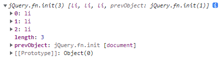
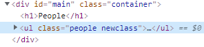
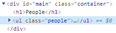

深入了解原始碼: jQuery
接下來的課程將探討一個很有的 JavaScript Library - jQuery，但課程中並不會去個別了解每個功能是如何實作的，而是去學習如何閱讀程式碼與了解其中的架構。
jQuery 是一個非常熱門的 JavaScript Library，但它其實並沒有為瀏覽器或 JavaScript 增添其他特性，而是單純透過封裝 JavaScript 來實現，且使用同一份原始碼就能支援各種瀏覽器環境。
jQuery 是封裝 JavaScript 並操縱 DOM 物件來實現它的功能，以下我們直接透過程式碼來了解它是如何運作的。
使用方式
首先我們可以在 jQuery 官方網站 下載未經壓縮的檔案，好處是它包含許多註解，可以藉此幫助我們了解程式碼，接著簡單的載一個 HTML 檔內載入我們所下載的 jQuery 檔案與自行撰寫的 JavaScript 檔案
1 | // index.html |
接著就可以在 JS 檔案中使用 jQuery，我們可以透過 jQuery或 $ 使用它，括號中可以像 CSS 一樣透過 tag、id 或 class 指定 DOM 物件
1 | // app.js |
透過 console.log 發現，符合的 DOM 物件會以 jQuery.fn.init 中的陣列來呈現，而每個取得的直都是一個 DOM 物件，而且它的 prototype 會指向一個 jQuery 物件，其中包含許多 method 可以使用

原始碼
接著我們來透過 jQuery 的原始碼了解為什麼會有上述的結果 ; 在這篇筆記撰寫的當下， jQuery 以來到 3.6 版，因此在官網下載未經壓縮的檔案後，得到一個 jquery-3/6/0.js 的檔案，打開這個檔案查看，會發現一共有一萬多行的程式碼，但我們並不是要一行行的讀它，而是先來了解它的架構。
環境判斷
首先，他執行了一個 IIFE 來，並傳入兩個參數 global 與 factory，並在一開始透過判斷 module 和 module.exports 是否為物件來確認是 CommonJS、CommonJS-like 或 Node.js 環境。
global: 透過window物件是否存在，如果存在就帶入window，反之則是當下執行環境本身 -thisfactory: 這裡則是實際 jQuery 的所有程式碼，可以看到如果typeof module不是object(一般 JS 環境)，就會直接把window作為global執行factory函式。
1 | (function (global, factory) { |
為什麼 jQuery 不需要透過 new 建立物件 ?
還記得前面透過錢字號 $ 帶入 CSS 選擇器指定 DOM 物件就可以直接使用 jQuery 嗎 ?
接下來我們來看一下為什麼可以這麼使用，一樣看到程式碼 ; 首先建立一個名為 jQuery 的變數名稱，並指派一個函式給它，透過關鍵字 new 一個 function constructor，所以我們在使用它的時候就不需要加上 new 了
1 | var jQuery = function (selector, context) { |
jQuery.fn 又是什麼呢 ?
繼續往下看到程式碼，jQuery.fn 被指派為 jQuery.prototype，還記得 function-constructors-and-prototype 中提到，函式都會有一個 prototype 屬性來作為透過 function constructor 建立物件的 prototype，jQuery 以 fn 來作為 prototype 的別名 (alias)，其中包含許多 method 供使用。
1 | jQuery.fn = jQuery.prototype = { |
jQuery.extend
在 reflection-and-extend 這堂課中，我們就介紹了 underscore.js 透過 extend 來擴充物件的屬性和方法到另一個物件上，其實 jQuery.extend 也是做了相同的事情
在 jQuery IIFE 中執行其他 Library IIFE
接著往下會看到有一個名為 Sizzle 的變數被賦予 IIFE，註解還補上了 相關網址，點開後發現這是一個 CSS Selectors Library，先不論詳細情況它做了什麼事，原來在 Library IIFE 中還可以使用另一個 Library 的 IIFE !
接著往後看到原來 jQuery.find 就是 Sizzle，而 jQuery.expr 就是 Sizzle.selectors
1 | (function (global, factory) {})( |
new 回傳之前做點別的事
在前面的課程中提到，如果透過建立 function constructor，再透過 new 新的物件，會自動生成一個新的空物件，並將 this 指向它，但接續一開始在我們使用 jQuery 時，因為它幫我們回傳一個 new，所以我們不需要透過 new 來建立 jQuery 物件
1 | var jQuery = function (selector, context) { |
但接著看到 init 函式，會發現它回傳的竟然是 jQuery.makeArray 函式所回傳的值，其中還帶入 this 這個參數，而 this 又是什麼呢 ? 這裡的 this 其實就是透過 new 所建立的新空物件，那既然透過 new 就會自動回傳一個空物件，它是不是有哪裡搞錯了呢 ?
1 | var init = (jQuery.fn.init = function (selector, context, root) { |
讓我們繼續看到 makeArray 到底做了什麼
1 | jQuery.extend({ |
原來它最後還是把傳入的 this 回傳了，只是在這之前又做了其他事情而已。
所有透過 jQuery 指向的 DOM 物件的 prototype 都是 jQuery
回到一開始，當我們透過 jQuery 帶入 CSS selector 所建立的物件，其 prototyope 都指向 jQuery.prototype，讓我們來看一下這是如何發生的 ; 原來是它將 init.prototype 也指向 jQuery.fn，也就是 jQuery.prototype
1 | var init = (jQuery.fn.init = function (selector, context, root) { |
Method Chain
Method Chain 指的是在 jQuery 中，當我們指定一個 DOM 物件後，可以在其後方不斷串接 method，如下:
1 | var q = $('ul.people').addClass('newclass'); |
當我們在後方串上一個 addClass，被指定的 DOM 物件就會加上這個 class

不僅如此，我們還可以在後方繼續串下去
1 | var q = $('ul.people').addClass('newclass').removeClass('newclass'); |

那麼這到底是如何做到的呢 ?
首先我們在 jQuery 原始碼中找到 addClass，會發現最後 return this，這裡的 this 指的就是呼叫這個函式的物件 $('ul.people')，而如果這個物件沒有該方法，就會透過 prototypal chain 找，所以找到了 jQuery 物件 ; 接著看下去，會發現包含 removeClass 的方法也都在最後 return this，這就是為什麼 jQuery 中可以不斷串接方法的原因了 !
1 | jQuery.fn.extend({ |
我們為什麼可以使用 jQuery 和 $
那麼回到最一開始的問題，為什麼我們載入 jQuery 的原始碼 - jquery-3.6.0.js 後，我們就可以直接呼叫 jQuery 和 $ 來使用呢 ?
因為在一開始的 IIFE 中，我們判斷 window 存在後，就不帶入第二個 callback function 參數的第二個參數 noGlobal，看到原始碼最下方會發現，當判斷 noGlobal 不存在後，並賦予全域物件 window 的 jQuery 和 $ 等於 jQuery 函式了。
1 | (function(global, factory) { |